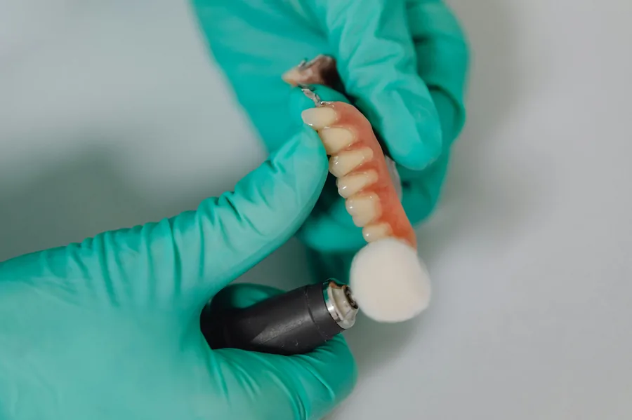

Usługi
Naprawy
Naprawy i korekty prac protetycznych. Najpierw ocena, następnie konkretna informacja o możliwościach i terminie.

Jak podchodzimy do napraw
- OcenaSprawdzamy zakres i ryzyko korekty.
- PropozycjaPodajemy najlepszą opcję i realny termin.
- RealizacjaNaprawa zgodnie z ustaleniem i kontrola efektu.
Współpraca B2B
Jeśli gabinet potrzebuje szybkich napraw, ustalamy stały i czytelny tryb przekazywania prac.
Szczegóły
Informacje dla gabinetów
Jak przyspieszyć realizację
Jasne zasady komunikacji
Współpraca B2B
FAQ
Najczęstsze pytania
Jak zgłosić pilną naprawę?
Najlepiej telefonicznie. Opisz problem i dołącz zdjęcia — szybko ustalimy realny termin.
Czy każdą pracę da się naprawić?
Nie zawsze. Jeśli naprawa będzie nietrwała lub nieopłacalna — proponujemy lepszą alternatywę.
Co jest potrzebne do wstępnej wyceny naprawy?
Opis uszkodzenia, zdjęcia (jeśli możliwe) oraz informacja, czy jest to pilne.
Czy wykonujecie podścielenia?
Tak — po ustaleniu celu i zakresu. Przydatny jest krótki opis objawów.
Jak długo trwa typowa naprawa?
Zależy od rodzaju uszkodzenia. W pilnych przypadkach szukamy najszybszego możliwego okna.
Czy naprawy obejmują korekty okluzji?
Tak — jeśli zlecenie tego wymaga i są dostępne dane o zwarciu.